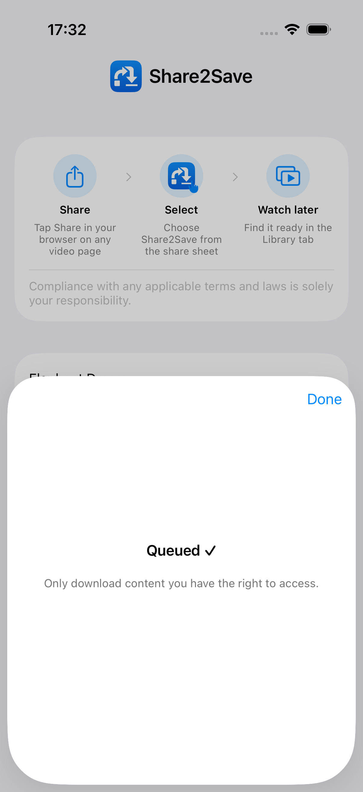
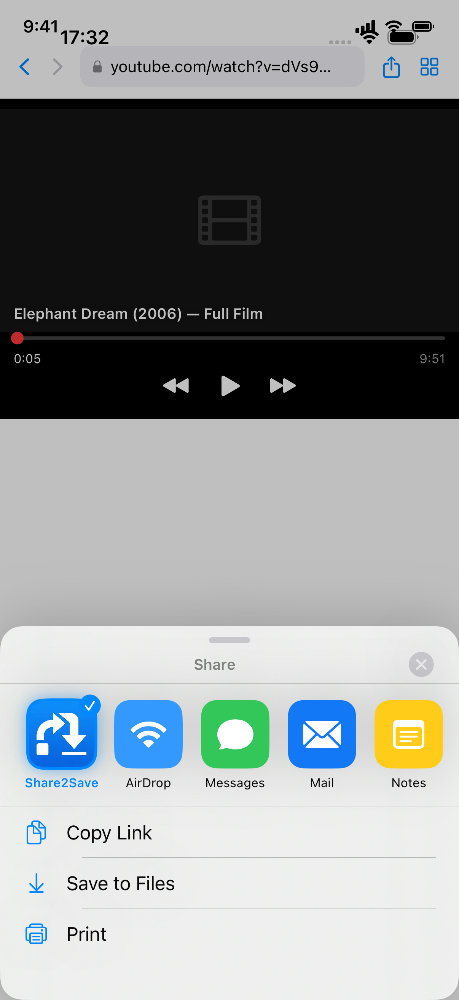
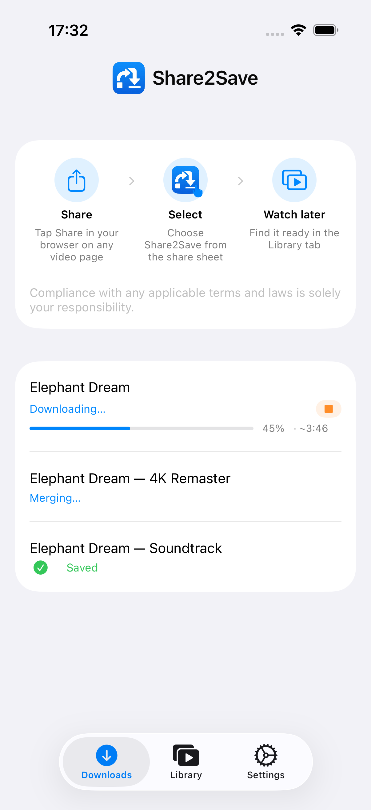
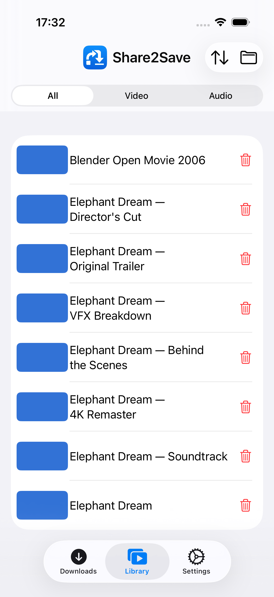
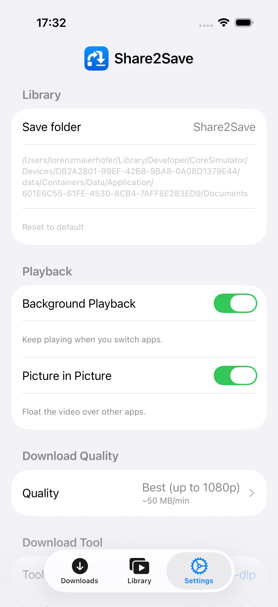
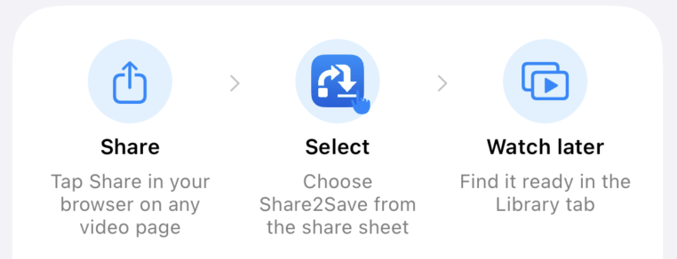

Videos & Audio speichern.
Überall offline ansehen.
Verwandle beliebige Video- oder Audio-Links in deine persönliche Offline-Bibliothek — kein Puffern, keine Datenverbindung nötig.
Deine Offline-Mediathek
Echte App-Screenshots — Link teilen, offline ansehen, Bibliothek verwalten.

Mit einem Tippen in die Warteschlange
Aus jedem Browser speichern
Hintergrunddownloads
Deine Mediathek
QualitätskontrolleBeliebigen Link in 3 Tipps speichern

Tippe auf “Teilen”
Tippe in Safari, Chrome oder Firefox auf die Teilen-Schaltfläche und wähle Share2Save aus dem Menü.
Der Download läuft
Share2Save lädt das Video oder Audio im Hintergrund herunter – auch nachdem du die App geschlossen hast.
Offline ansehen
Öffne deine Bibliothek jederzeit – ohne Internetverbindung. Genau dort weitermachen, wo du aufgehört hast.
Für Offline gebaut. Für Datenschutz gebaut.
Jede Funktion wurde mit einem Ziel entwickelt: deine Medien, verfügbar wann du sie brauchst.
Mit einem Tippen speichern
Teile beliebige Video- oder Audio-URLs aus Safari, Chrome oder Firefox direkt an Share2Save. Der Download startet sofort.
Hintergrunddownloads
Downloads laufen weiter, während du die App wechselst, den Bildschirm sperrst oder etwas anderes tust.
Sperrbildschirm-Widget
Ein Live-Activity-Widget zeigt den Downloadfortschritt direkt auf dem Sperrbildschirm. Ab iOS 16.2.
Persönliche Mediathek
Gespeicherte Inhalte übersichtlich in separaten Tabs für Video und Audio. Genau dort weitermachen, wo du aufgehört hast.
Bild im Bild
Video als schwebendes Fenster weiterscauen, während du andere Apps nutzt. Multitasking ohne Unterbrechung.
Qualitätskontrolle
Wähle beste Qualität, 1080p MP4, 720p oder nur Audio. Einmal einstellen – jeder Download hält sich daran.
Datenschutz zuerst
Kein Konto erforderlich. Keine Werbung. Kein Tracking. Alles wird lokal auf deinem Gerät gespeichert.
Alles was du brauchst, nichts was du nicht brauchst
Deine Medien. Dein Gerät. Deine Regeln.
Keine Cloud. Kein Abonnement. Kein Kompromiss.
Funktioniert im Flugzeug
Vor dem Flug herunterladen und ganze Playlists auf 10.000 Meter Höhe ansehen, ohne für WLAN zu zahlen.
Spart mobile Daten
Einmal im WLAN herunterladen, unbegrenzt anschauen ohne das Datenvolumen zu verbrauchen.
Vollbild-Erlebnis
Immersive Vollbild-Wiedergabe mit Bild-im-Bild-Unterstützung für echtes Multitasking.
Null Tracking
Keine Analytik, keine Datenübertragung. Deine Sehgewohnheiten sind deine Angelegenheit.
Sofortige Wiedergabe
Kein Puffern, kein Warten. Dateien werden aus dem lokalen Speicher mit voller Geschwindigkeit abgespielt.
In 10+ Sprachen verfügbar
Die App ist vollständig lokalisiert, damit die Oberfläche überall auf der Welt vertraut wirkt.
Häufig gestellte Fragen
Share2Save funktioniert mit einer breiten Palette an Video- und Audio-URLs – darunter YouTube, Vimeo und viele Podcast-Feeds. DRM-geschützte Plattformen (wie Netflix oder Spotify) können nicht heruntergeladen werden. Share2Save ist für Inhalte konzipiert, auf die du das Zugriffsrecht hast.
Ja. Share2Save nutzt iOS Background URL Session, sodass Downloads weiterlaufen, auch wenn du die App wechselst oder den Bildschirm sperrst. Ab iOS 16.2 zeigt ein Live-Activity-Widget auf dem Sperrbildschirm den Fortschritt in Echtzeit.
Das liegt ganz bei dir. Wähle Qualitätseinstellungen, um Dateigröße und Qualität abzuwägen: 1080p MP4 für beste Qualität, 720p als Mittelweg oder nur Audio für minimalen Speicherverbrauch. Du kannst gespeicherte Dateien jederzeit löschen.
Vollständig lokal. Share2Save benötigt kein Konto und sendet keine Daten irgendwohin. Alle heruntergeladenen Dateien werden ausschließlich auf deinem Gerät gespeichert – nichts verlässt dein iPhone.
Ja – das ist der ganze Sinn. Sobald eine Datei heruntergeladen ist, ist sie dauerhaft ohne Internetverbindung verfügbar. Ideal für Flüge, Pendeln oder überall dort, wo du wenig Datenvolumen hast.
Ja. Kein Abonnement, keine In-App-Käufe, keine Werbung. Share2Save ist vollständig kostenlos.
Deine Medien. Überall. Offline.
Lade Share2Save kostenlos auf iPhone und iPad herunter.
Im App Store ladenKostenlos · iPhone & iPad · iOS 16+